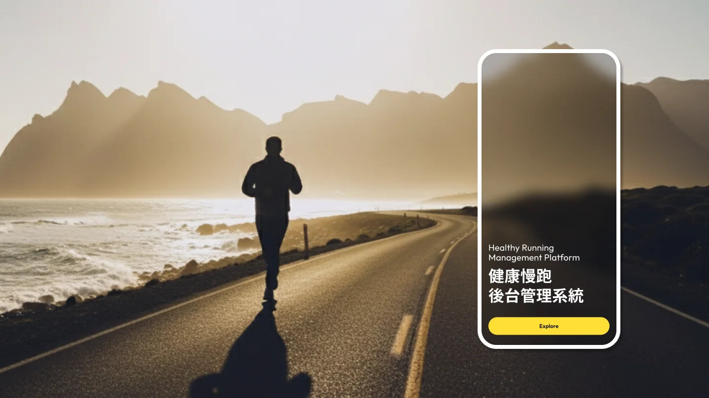

Healthy Aerobic Exercise Management System
健康有氧運動APP
後台管理系統

內部專案
專案簡介
內部開發專案，涵蓋手機APP與後台管理系統。
包含會員管理、影音訂閱、部落格文章管理、推播訊息、廣告設定、問卷設計與統計，以及跑步/物理治療課程管理...等。除了支援前台APP的功能外，同時加入其他營運需求。
此專案部分功能是公司「延伸既有系統」搬運而來，因此我主要針對新舊功能的UI做統整，以及部分功能的UX調整，使後台系統操作邏輯與視覺風格保持一致。
我的角色與貢獻
協作流程
-
a.
在 Git 分支（feat/fourth）上完成設計系統實作，與後端工程師同步開發，處理合併衝突與視覺調整。
-
b.
調整Razor view 模板結構，討論需要重新串接的細項，確保UI與後端整合順暢